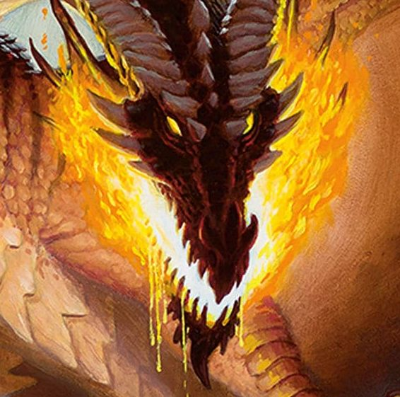
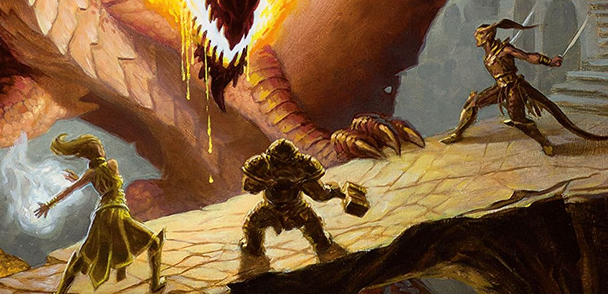
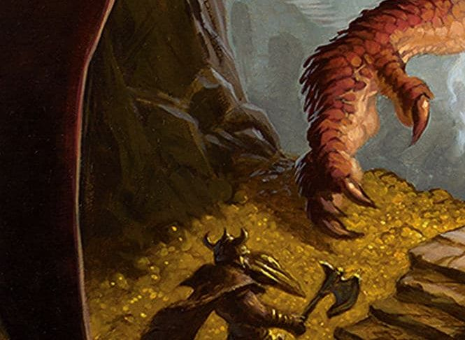

Dungeons and Dragons is a popular Table Top Roleplaying Game also known as a TTRPG. D&D as it is commonly refered to, is the first TTRPG, and though there are many more TTRPGs today, Dungeons and Dragons still remains very popular. D&D is considered a rules-heavy system, as opposed to a rules-lite system that would be less rigid, because it has a large number of rules and mechanics. With that in mind many Dungeon Masters or DMs can use their discretion to be as loose or exacting with the rules as they like. One of my favorite things about D&D is the amount of fan-made supplements for the system, called homebrew. I say fanmade loosely, as some D&D supplements are formally published independently. I have a whole shelf filled with books for D&D. All in all the system is as malleable as you want it to be.
To play Dungeons and Dragons, you need one Dungeon Master, who runs the game and acts as the non-player elements in the game, and at least one player, who interacts with the world the DM creates. It is possible to play D&D with just one player, but having at least 3 players is recommended. Most people who get into D&D start as players, since it's easier than being the DM. I've been playing D&D for about 8 or 9 years now, and I've taught friends to play over the years, so believe me when I say that the hardest part of getting into D&D is making your first character. Playing the game itself is not too complicated moment to moment, but making the character can be daunting. I'll explain that in the next section. As for playing, you need a 7 piece set of gaming dice, or an online dice roller, to play. The dice may also seem intimidating, but you'll only really use 1 of them, the 20 sided die, for 90% of the game. The 20 sided die, or d20, is used to make what's called a check. Checks are controlled by the DM, and they come into play whenever you have a chance of failing some task in the game. For example, say you're trying to jump over a 10 ft long pit, you would then roll a d20 and if you get above a 10, you cross the pit safely, otherwise you fall. The number needed to succeed a check is called a Difficulty Class or DC for short. DM's decide most of the DCs in the game unless they're specified by a specific trap or spell.

There's a couple different approaches to creating a character, but in my opinion the best way to start is to pick a class and then a species. Some people say it's best to roll for player stats first, but I've found that tends to be more confusing. A class in D&D is essentially your role, like a wizard or fighter. Your player class gives you the majority of your abilities in game, and the reason I recommend picking this first is that, different classes rely more heavily on diffent stats than others. Stats or statistics are broken up into 6 categories. The value of each stat effects any relavent ability or skill related to that stat. The 6 stats are Strength, Dexterity, Constitution, Wisdom, Inteligence, and Charisma. To get the value of these stats for a new character, you roll 4, 6 sided dice, and add the 3 highest rolls together. For example if you roll a 3, 4, 5, and a 6, you only add the 4, 5, and 6 for a total of 15. The higher the stat the stronger the ability. You repeat that 6 times until you have 6 numbers to then assign to your stats as you see fit. You also get 3 extra points with your species, to either increase one score by 2 and another by 1 point, or increase 3 stats by 1. Choice in species also provides some other skills or abilities depending on the species. There is also background, which adds some extra abilities and skill proficiencies. The rest of making the character is really just, putting the right numbers in the right boxes and writing down the necessary information. It can look really initimdating at the start, but once you actually start playing, it starts to make more sense.
Mechanics aside, the most important action in the game is roleplaying. Roleplaying is essentially playing pretend, but with your characters in the setting and world the DM sets up. You don't need to be a professional actor or anything to get into it. It's as simple as saying "my character does this." Roleplaying is the backbone of D&D, since there's no screen or game engine to run everything. While you can have maps and figurines and visuals, the most you need is a paper and your imagination. I'm a big fan of theatre of the mind play, because it makes it easier to have things be more flexible and dynamic. I should mention that I mainly DM when I play D&D. Being the DM means that everything other than the players in the world is controlled by you. To other characters in the adventure, called NPCs or non-player characters, to the items they find, to the monsters they fight. When you have to keep track of everything, and your players can be unpredictable, it helps to have some loose preparations and be ready to improvise. You can make a whole battlemap for an encounter, and then completely not use it because your players found a way around it.

Speaking of battle maps, let's talk combat. Combat is the second most complex thing in D&D, after making a character. It can be a little intimidating but you learn fast by playing the game. The first part of combat involves everyone rolling initiative. To roll iniative, you roll a d20 and add your initiative bonus. This determines turn order. The highest numbers go first. A turn in D&D is about 6 seconds, but this is just a rough estimate for visualization purposes. A turn in D&D consists of 4 components: An action, a bonus action, a reaction, and movement. This brings us to the action economy. Certain powers or attacks will cost an action, while others may only be a bonus action. For example, an attack with a weapon is almost always an action, but certain spells or special abilities can be used as bonus actions. Movement is a set amount of distance, in feet, you can move on your turn. A reaction can not be used on your turn, but may be triggered on other turns. For example, the spell Hellish Rebuke is a reaction, meaning it can be cast when a player is attacked. Each player only gets one reaction per round in combat. A round is complete once everyone in initiative order has taken their turn. Enemies are controlled by the DM and the DM rolls initiative and keeps track of hitpoints. Hitpoints are a player or enemies health total. Hitpoints can be decreased by dealing damage and increased by healing spells or potions. When an enemy is reduced to 0 hitpoints they die. When a player is reduced to 0 hitpoints, they are considered on the brink of death and have to make death saving throws on their turns unless they are stabilized. A death saving throw requires rolling a d20 and adding your constitution modifier. If the roll is above 10 it is considered a success and it is considered a fail if it is below 10. 3 successes allow the player to get back up at 1 hitpoint, while 3 fails result in death.
There are many other official mechanics in D&D. From spellcasting to traveling, to downtime activity, there's rules and systems for pretty much everything. One of my favorite things about D&D is homebrew. As mentioned above, homebrew is when people make their own rules and mechanics for D&D. This can range from small pdfs or personal ideas, to fully published books. I collect a lot of homebrew supplements, and some of my favorites are books that add new mechanics all together. For example Dark Matter by Mage Hand Press brings sci-fi gameplay to D&D. It adds rules for space travel and intergalactic combat, among other things. Another book I have is called Obojima tales from the tall grass, which adds content inspired by Studio Ghibli movies. There's all kind of stuff out there and the best part is you can make your own if you want to. If you have an idea and you want to implement it in D&D, you most likely can. It's all pen and paper so the limit is your imagination. I often have players talk to me about how we can make their ideas for custom weapons and magic items come to life, and we work it out. Here are some of my favorite publishers that make D&D supplements: